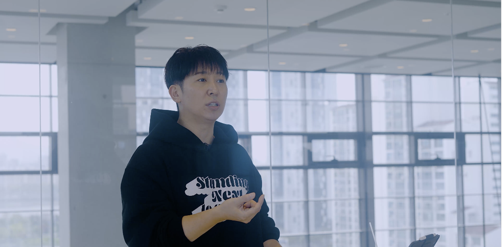
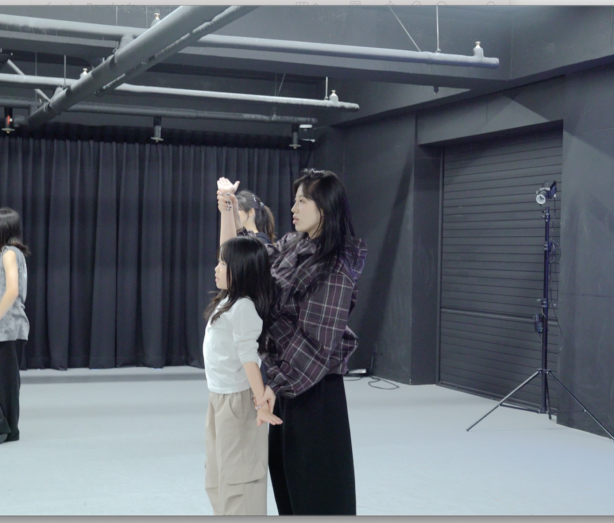
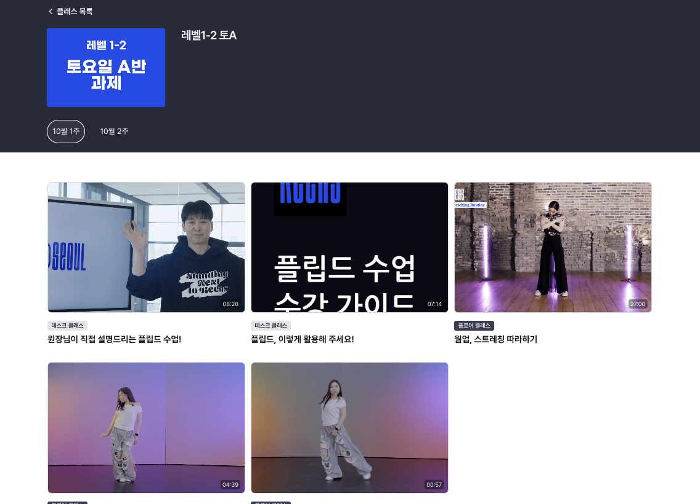

01
HOMEWORK
숙제부터 가볍게 시작
이번 주 과제를 확인하고, 영상 속 동작을 따라 해보세요.
KEENS SEOUL ONLINE CLASS
집에 와서 “그 동작 뭐였지?” 싶을 때,온라인 강의를 켜보세요.숙제부터 복습, 기본기까지 집에서도 다시 따라 할 수 있어요.
킨즈서울 수강생이라면 누구나 이용 가능

WHY ONLINE CLASS
그럴 땐 영상을 켜보세요. 이번 주 과제를 확인하고, 가물가물한 동작은 다시 보며 따라 해요.
“숙제, 뭐부터 하지?”
“아, 그 동작 뭐였더라?”
“워밍업부터 다시 해볼까?”

THREE WAYS TO PRACTICE
HOMEWORK
이번 주 과제를 확인하고, 영상 속 동작을 따라 해보세요.
REVIEW
가물가물한 부분은 다시 보고, 몸으로 한 번 더 익혀요.
FOUNDATION
워밍업, 스트레칭, 기초 동작을 집에서도 반복해요.
LIVE CLASS
숙제와 기본기는 내 속도에 맞춰 반복하고, 라이브 클래스에서는 같은 시간에 함께 춤춰요.
킨즈서울 수강생이라면 누구나 이용 가능
A LOOK INSIDE
수강 중인 클래스의 과제를 확인하고, 설명 영상과 워밍업 강의를 골라 볼 수 있어요.

CLASS → HOME
수업에서 배운 동작을 집에서 다시 해보는 시간.킨즈서울 온라인 강의가 수업과 수업 사이의 연습을 이어줘요.
킨즈서울 수강생이라면 누구나 이용 가능